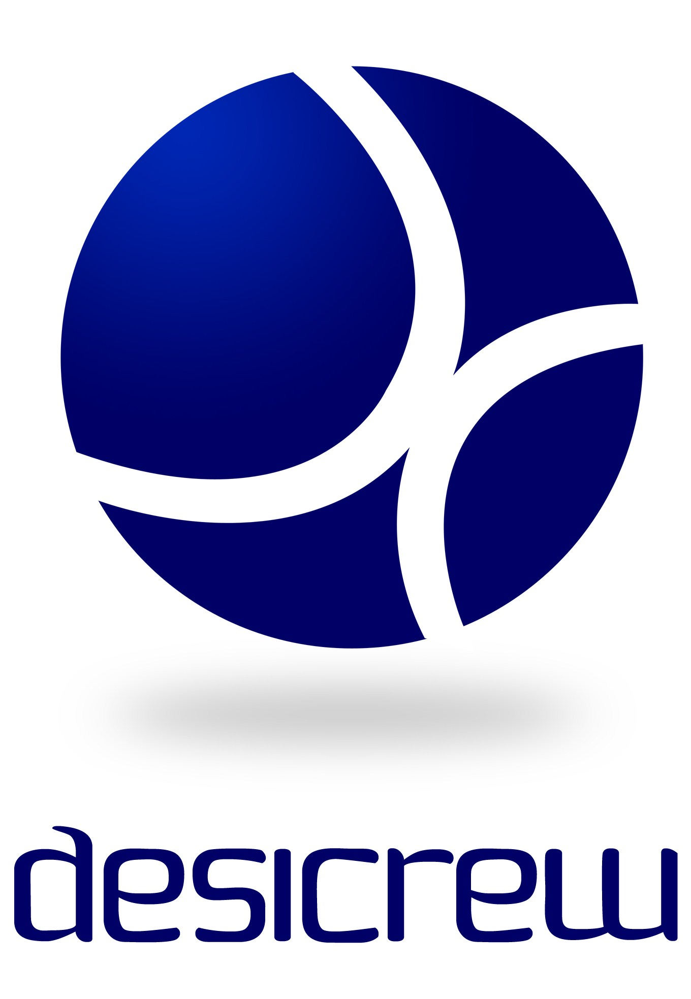

DESICREW:
DesiCrew is a Rural BPO company incubated by RTBI of IIT-Madras. Founded by Saloni Malhotra, DesiCrew aims to create IT-based employment opportunities for Rural youth. By creating jobs in the villages, wealth is created by the community and is distributed within the community, thereby empowering the village. Currently, we have over 250 employees working across our centers in Tamilnadu and Karnataka.
We are looking for Interns to work on our Projects based on Free & Open Source Software (FOSS) and Transcription. Candidates interested in HR functions will also be considered. Stipend details will be based on the output, which will be discussed at the event.